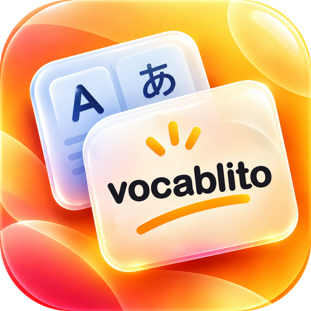

Vocablito
Іспанські слова з уроків, які залишаються в пам’яті
- Додаєш слово за секунду: наголос і переклад з’являються самі.
- Блокнот для уроку: пишеш слова, усе зберігається само.
- Щодня коротке тренування: лише дві кнопки, «пам’ятаю» чи «не пам’ятаю».
- Квіз, синоніми, озвучка і прогрес.
Незабаром в App Store. Інтерфейс українською, російською, англійською та іспанською.